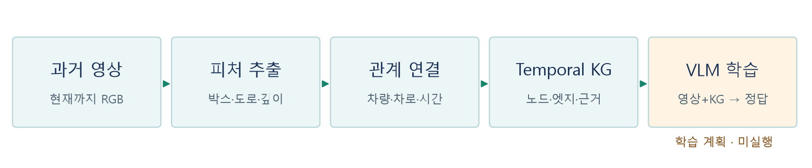
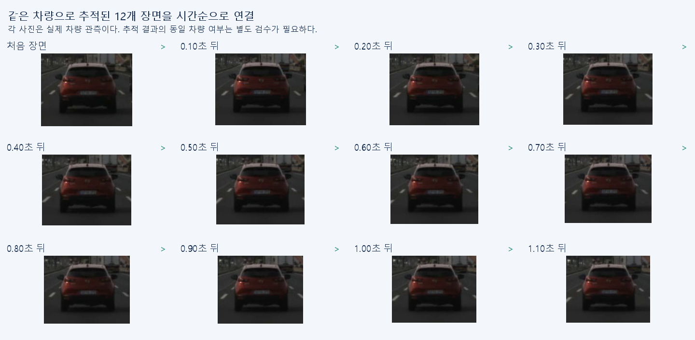

Maneuver Decision-Making for Anticipatory Driving with Vision–Language Models Using Ontology-Based Temporal Knowledge Graphs
영상에서 차량·도로·시간 피처를 뽑아 관계로 연결하고, 이 구조를 VLM 학습 입력으로 사용한다.
1. 영상에서 피처를 추출한다
과거 영상에서 차량·도로·차선·깊이·시간 정보를 뽑는다. PREVENTION 전방 RGB를 주 데이터로 사용하고, CASCADE 연계 영상으로 다른 도로 조건을 비교한다.

| 피처 | 추출 방법 | 얻는 값 | 쓰임 |
|---|---|---|---|
| 차량 | YOLO26m + BoT-SORT | 차량 테두리·추적 표식·아래쪽 중앙 | 차량 위치를 찾고 이전 장면과 연결 |
| 도로·차로 | Mask2Former + CLRerNet | 도로·시설 영역·차선 위치 | 차량이 들어가는 차로 영역과 가림 확인 |
| 깊이 | MetricAnything | 차량의 보이는 표면까지 추정한 깊이 | 차량 위치를 해석하는 보조 정보 |
| 시간 | 연속된 장면과 촬영 시점 | 이전 위치·관측 간격 | 움직임과 잠시 보이지 않는 상황 구분 |

실제 계산 예. 하단점은 접지점이 아니며 표면 깊이는 검증된 범퍼 거리가 아니다.
2. 피처를 공간·시간 관계로 연결한다
차량이 들어가는 차로 영역을 연결하고, 같은 차량으로 추적된 이전 장면을 이어준다.
| 연결 | 조건 |
|---|---|
| 차량과 차로 | 차선과 도로 영역을 함께 확인해 차량이 들어가는 영역을 연결 |
| 현재 장면과 이전 장면 | 같은 차량으로 추적되고 촬영 시점·카메라가 맞는 기록을 연결 |
| 자차와 주변 차량 | 자차와의 관련성을 확인하되, 같은 실제 차로·바로 앞 차량인지는 근거가 부족하면 보류 |

차선과 도로 영역을 함께 확인해 차량이 들어가는 차로를 연결합니다. 경계가 불분명한 차량은 남겨 두고 차로 연결만 보류합니다.

다른 도로 장면의 연속 영상입니다. 같은 차량으로 추적된 기록을 묶고, 각 장면의 위치와 촬영 시점을 함께 저장합니다.
3. Temporal KG로 구조화한다
차량·차로·도로를 점으로 표현하고, 어느 차로에 있는지와 이전 장면의 어느 차량인지를 선으로 연결합니다. 각 연결에는 시각과 판단 근거를 붙입니다. 온톨로지는 이 점과 선이 무엇을 뜻하고 언제 연결할 수 있는지를 정하는 규칙이다.
| 구성 | 저장 내용 |
|---|---|
| 점으로 표시할 대상 | 차량·영상에서 추정한 차로 영역·도로·자차 |
| 선으로 연결할 관계 | 차량이 들어가는 차로 영역·이전 장면의 차량과 연결 |
| 함께 남길 정보 | 위치·깊이·촬영 시점·판단에 이용할 수 있었던 시점·판단 근거 |
판단 시점까지의 근거만 사용한다. 가려진 차량은 남겨 두고, 근거가 부족한 관계는 판단을 보류한다.
실제 영상에서 단계별 결과를 확인한다
장면을 고르고 차량을 선택하면, 도로 근거부터 시간 연결까지 같은 관측으로 확인할 수 있다.
PREVENTION의 대표 장면 6개를 공개한 정적 데모다. 실시간 추론이나 전체 데이터 공개가 아니다.
초록: 영상 차로 후보 · 노랑: 검출 차선 · 청록: 선택 차량 · 주황: 소속 판단 보류
선택 차량의 연결
관측에서 얻은 값
현재 연결의 원 관측 시각·사용 시각·근거 보기
화면의 연결은 계산된 영상 근거 또는 추적 가설이다. 실제 같은 차로·이동 방향·물리 차단·직접 선행차는 미확정이며, 자동 제외 차량은 0개다.
원본 장면을 연속 영상으로 확인한다
대표 장면을 선택하면 영상도 해당 위치에서 멈춘다. 재생 중 그래프는 선택한 대표 장면에 고정된다.
검수 재생은 10 fps, 30초다. 원 관측의 경과 시간은 약 25.71초로, 재생 시간을 실제 행동 간격으로 사용하지 않는다.
4. 영상과 Temporal KG로 VLM을 학습한다
과거 영상 + 사용 가능한 Temporal KG + 질문 → 독립 검수한 대상 차량·관계·변화·근거 답변.
기존 VLM이 검수된 정답 답변을 만들도록 추가 학습한다. 가속·감속·차로 변경 판단은 별도로 검수한 행동 정답을 확보한 뒤 학습한다.
| 학습 항목 | 내용 |
|---|---|
| 질문 예 | 이 차량은 어느 차로에 있으며, 그렇게 판단한 이유는 무엇인가? |
| 답변 형식 예 | 차선과 도로 영역을 근거로 차량의 차로 후보를 연결했습니다. 자차와 같은 차로인지 판단할 근거는 부족합니다. |
| 정답 구성 | 모델이 만든 KG를 정답으로 복사하지 않는다. 미래 행동 정답은 입력에서 분리한다. |
| 현재 상태 | 학습 계획 · 미실행 · 독립 학습 정답 구축 필요 |
현재 계산을 쉽게 설명한 예시이며, 학습 정답으로 인증한 답변이 아니다.
5. 핵심 수식과 검증
위치 → 소속 → 깊이 → 그래프 → 학습 손실 순서로 읽는다. n은 현재 프레임, i는 차량 관측, k는 차로 후보다. 현재 계산식의 번호를 유지하고, (T)는 미실행 학습 설계다.

차로 소속은 포함률만으로 채택하지 않는다. 유일 후보·완전 포함·도로·가림·사용 조건을 함께 검사한다.
검증: 같은 영상·차량·질문으로 영상 단독 / 목록 / 정적 KG / Temporal KG를 비교한다. 대상·관계·변화·근거의 정답·오답·보류와 잘못된 제외를 측정한다.
실제 차로·방향·물리 거리의 정확도와 최신 VLM 개선 효과는 미검증이다.
데이터 출처와 사용 범위
PREVENTION: R. Izquierdo, A. Quintanar, I. Parra, D. Fernández-Llorca, M. A. Sotelo, The PREVENTION dataset: a novel benchmark for PREdiction of VEhicles iNTentIONs, ITSC 2019, pp. 3114–3121. 논문 · 데이터 제공자·이용 조건
이 페이지의 PREVENTION 영상 발췌·이미지·변환 결과는 원 데이터에 기반하며, CC BY-NC-SA 3.0 조건으로 제공한다. 차량 박스·세그멘테이션·차선·깊이·관계 표시는 본 연구에서 계산한 결과이며 제공자의 정확도 인증을 뜻하지 않는다.
CASCADE와 PhysicalAI의 원 영상·주석은 포함하지 않는다. 연구 소개에 언급된 VLM 추가 학습은 계획이며 미실행이다.
민현식 · Hanyang University, VIAT Lab · 사이트 소스